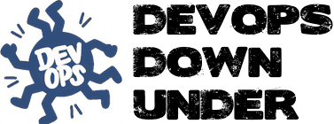

<% @eventhome = @page.directory.split(File::SEPARATOR)[0..1].join(File::SEPARATOR) %>

**<%= render(:partial => "/#{@eventhome}/_title") %>** will be held on **<%= render(:partial => "/#{@eventhome}/_target_date") -%>** in **<%= render(:partial => "/#{@eventhome}/_target_location") -%>**
[Registrations](registration/) are now open!
We are currently looking for [sponsors](sponsor/) and [proposals](propose/) for talks.
Last off, we would like to thank Lindsay Holmwood (@auxesis) for all his extremely hard work of setting up and running the previous 2 devops downunder events, and for his mentorship of this small group that has taken on the task of continuing devops downunder; Chris Bushell for his contribution in 2011, and everybody else who helped organise or attended previous events.